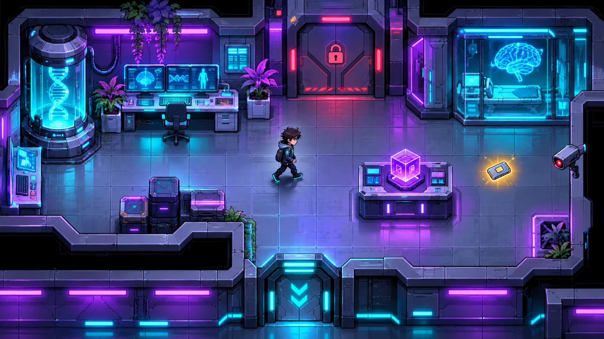

NOVA ARCADIA // SECTOR 01 ● LIVE FEED

PROTOCOLO MORFEOESTADO: CRÍTICO
2087 / LA ÚLTIMA CIUDAD DESPIERTA
VERA // TRANSMISIÓN DE EMERGENCIA
EL FUTURO
ESTÁ EN TUS MANOS.
ESCAPÁ DE MORFEO.
Explorá cinco sectores, reuní tarjetas y núcleos de energía, activá las terminales y escapá antes de que Morfeo te alcance. Jugá solo o competí con tus amigos.
◈ 5 SECTORES◎ 3 DIFICULTADES⌁ 2–4 JUGADORES
MULTIJUGADOR EN TIEMPO REAL
SALA
Compartí el código con hasta 3 amigos. Todos compiten con el mismo mapa y dificultad. El anfitrión inicia la carrera.
INDIVIDUAL
NIVEL 1/5 · INSTITUTO CENTRALTIEMPO RESTANTE14:00
VIDAS♥ ♥ ♥
PROGRESO0/5
CENTRO DE CONTROL / SECTOR ACTIVO◉ EN DIRECTO
NIVEL SUPERADO